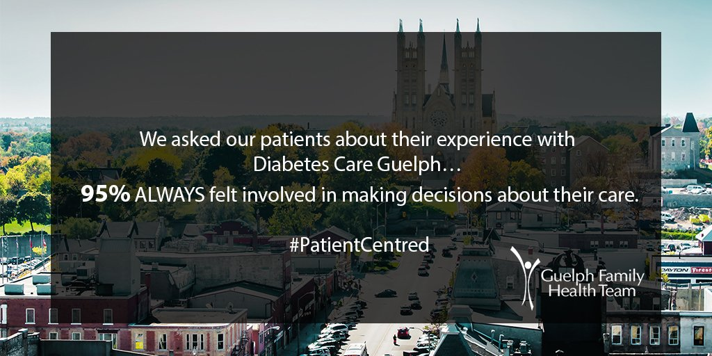

About Guelph Family Health Team
The Guelph Family Health Team was established in 2006 and now has close to 30 clinics in its ranks. The organization focuses on providing patient centred care and developing a health care story to allow for a team based approach to a patient’s health care. This team based approach means patients have access to the specialists and staff they require to achieve their best possible health. I spent the majority of my time in the executive offices located in the Quebec St Mall in downtown Guelph but throughout the term I did get the chance to visit various clinics including Dawson Road and Diabetes Care Guelph (DCG). The system I worked on was called IMS or the Information Management System and the Guelph Family Health Team produces, distributes, and supports this system for many health teams across Ontario. While I primarily worked on my own for the two co-op terms I completed with the GFHT, the rest of the IT staff was incredibly helpful in providing insight as to the requirements of the various staff members.
 The approach of Guelph Family Health Team staff is entirely patient centred.Description Of My Position
During my time at the Guelph Family Health Team I had various tasks that needed to be completed. The primary job I was tasked with was the updating and maintenance of the Information Management System or IMS. This system is used to record statistics of the day to day operations of various health teams in Ontario and is used to generate data for the healthcare ministries of Ontario, because of this my work had to be precise as to not cause any interruptions in recording. In addition to recording data, IMS was used to pull reports, keep track of employee time, and record class attendance data for the various classes run by the health teams. Part of my job was to provide support to the users of system, this involved anything from providing tutorials to producing bug fixes. Another of my various duties was keeping the database up to date whenever there was a discrepancy between what was entered and what must be reported to the ministry. The primary project I was tasked with during my term was the revitalization of the homepage of IMS. When asked about the original homepage most of the people I spoke with to gather requirements for the project found it to be lacking of important information and functions. After the project was complete the new homepage included graphs with up to date information about the user’s day to day progress made with the Google Charts API, a twitter feed of the family health team's events, and ease of access links to the primary functions of the site.
Goals
Long Term Attentive Coding
Goal: One of the issues I have for programming for long periods of time is I tend to get distracted and focus on more than one task resulting in a handful of half finished jobs. These jobs tend to pile up and can make my repositories messy. So for my first learning goal I want to make sure my requirements and bugs lists are properly organized to keep myself on task throughout the day.
Action Plan: I will make use of various organizational softwares (OneNote, Google Drive, etc) to maintain order and structure to the flow of my work. By prioritizing and flagging emails as they come in and transferring them to other organizational softwares I can keep my daily tasks more organized as well as make my to do list more accessible regardless of workstations.
Measure of Success: The way I will measure the success of this goal is to keep track of how often I use these organizational softwares with a daily log.
Reflection: During the semester the organizational softwares used changed but the practice did not. I kept a thorough log of all tasks, checked in on them daily, and even allowed my supervisor, Justin Wolting, to edit and designate priorities to the tasks if he felt I was askew. This allowed me to remain focused and on task throughout my work term.
Written Communication
Goal: One thing I have never had to do in university is provide documentation for users with little to no technological experience. Generally the people I provide documentation for are students or professors in the computer science program. My goal is to ensure that I provide documentation that is neat, easy to understand, and informative to both the users of the software and the future co-op students who will be assigned to this project.
Action Plan: To ensure that my documentation is organized and visually appealing I will use MarkdownPad to design the layout. Additionally I will run the documentation by various users of the software as it is developed to get feedback on the information and it’s helpfulness.
Measure of Success: The measure of success for this goal will be dependent on user feedback on the documentation I provide along with our software. I have direct contact with some of the clients and hope to ask for their feedback.
Reflection: During the process of completing this goal some aspects of it changed, primarily that I did not use MarkdownPad but instead used a template of a similar document. The feedback I received about the documentation was generally positive, the only critical response being that I was almost too thorough for what was required.
Handling Conflicting Client Opinions
Goal: The third goal I have for this work term is to work on my handling of conflicting client suggestions. In my experience when a project is handed to multiple people of influence, while all of those people are essentially working towards the same goal, they may have differences in the approaches they would take in the execution. This can lead to conflicts and wasted time in regards to coding features or functions that do not reach the final build.
Action Plan: The way I plan to approach this issue is by resolving these conflicts immediately and not beginning work on a feature until all the involved parties have come to an agreements, through my own moderation, as to what they are looking for. This will include sending emails of potential solutions to problems and asking for both parties feedback or for local clients potentially running it past them in person.
Measure of Success: I will measure my success by keeping track of the amount of times I have had to backtrack my previous work to a stage where it works for multiple parties. The less often I have to do this the better. (Goal: Less than 3 times in the term)
Reflection: Through multiple meetings with clinic coordinators and other staff members I was able to make additions to the site that were beneficial to all parties. During my term I never had to roll back any changes I made due to unhappy parties however during the discussions about features compromises had to be made to keep all parties happy. I consider this to a be a success.
Developing for the Future
Goal: The fourth goal I have for my summer work term is to work on my long term thinking while developing solutions. During my first co-op term with Guelph Family Health Team I spent the majority of my time learning the system and the development tools previous co-ops used. Now that I have a better understanding I believe I can develop solutions that not only work in the moment but make future development and expansion much easier.
Action Plan: The steps I will take to achieve this goal are when implementing new features or repairing bugs I will focus on expandability, making use of the database instead of hardcoded lists, and focusing on modularity to allow for the easy addition or alteration of features in the future.
Measure of Success: The way I will measure this success is by keeping track of how many times I had to resort to a method that is not conductive to the expandability of the site. Additionally a follow up with the next co-op to get their feedback on the expandability of the website may be beneficial.
Reflection: While I have not been able to properly meet up with my replacement to discuss the additions I have made to the site I feel that I have made a considerable effort in ensuring the future expandability of the site. There was a few occasions where a hard coded and limited solution was needed due to time but I provided adequate documentation so this can be corrected.
Incorperating Various Aspects of Health Care in Solutions
Goal: My fifth goal is to work on incorporating the different sides of health care into the projects I am working on. Throughout the work term so far there have been varying opinions on features that need to be added and their value from the economic side of things and the healthcare side of things. I would like to properly include both these viewpoints in my further additions to the site.
Action Plan: The steps to accomplish this are simple and I have already begun the process. I will act as a point of contact between these two groups, hearing both their needs and building a plan that meets both sets of requirements.
Measure of Success: I will measure my success by the feedback I get and alter my plan accordingly. If I make a change or release a feature and the feedback is negative from one group but positive from the other I will know that I have considered one group’s requirements higher than the others.
Reflection: Through my requirements gathering I was able to provide updates to the website I was working on that met the needs of the those considering the financial aspects of the health team as well as those who are more patient centered. After these updates there was no complaints or suggestions from one group over the other so I consider this a success.
Prioritization of Tasks
Goal: The final goal I have for the summer work term is to work on my prioritization of tasks relative to their importance. Now that I have begun to develop new features in my second work term the amount of work I have to complete has increased. Due to this increase I have to make decisions based on what needs to be completed first and who is making the request. I would like to increase my level of discretion while making these decisions.
Action Plan: The steps to accomplish this goal start with assembling an priority order for the different types of tasks (feature, bug fix, database update, etc), the level of impact it has on the system, and the groups, people, or departments that are making the request. After this is complete all I have to do it make effective use of the organizational softwares I have put in place during my time here.
Measure of Sucess: I will measure my success based on the frequency of the check ins / follow ups I get asking about the status of a project or task. If I complete this goal these types of follow ups should be kept to a minimum.
Reflection: Through the use of organizational software such as Trello I was able to work with my supervisor Justin and develop a system of prioritizing tasks. After implementing this software the amount of follow ups and requests for more info greatly reduced as the more time sensitive and high priority requests were being fulfilled sooner.
Conclusion
In conclusion, my time spent with the Guelph Family Health Team was very well spent. I was able to make a lot of new connections and spend time programming in a professional environment. It was satisfying to go through the entire process of software development from requirement gathering to seeing the finished project go live. All in all the experience with the team was invaluable and I am continuing on doing project work with the team throughout the next semester.